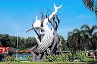

My Hometown
Surabaya is the capital city of East Java. It is known to many in Indonesia as the
City of Heroes. This is because of an event that happened in November 10th 1945, The Battle
of Surabaya. Lots have sacrificed themselves in that battle. Thus, every year in Indonesia,
there will always be an event as a reminder of that big event.
Today, Surabaya has become one of the largest cities in Indonesia. There are lots of people
living here. Sadly, due to that fact, pollution can be found almost everywhere